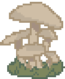
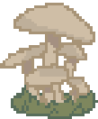

notes
 this webpage was ment to be used with an id scanner!
this webpage was ment to be used with an id scanner!
you would scan a badge, then the info on the fungi would pop
up.


this is what i have right now blah blah blah
─── ⋅ ∙ ∘ ☽ ༓ ☾ ∘ ⋅ ⋅ ───
Welcome to Fungal Groups. Use the navigation buttons to explore major fungal groups, how they’re built, how they reproduce, and how they affect ecosystems. This site is styled like a “scanner” interface—each page is a quick field guide with examples and key facts.
Fungi are important decomposers and symbiotic partners in nature, recycling nutrients and supporting plants. Some fungi are also parasites and pathogens that affect crops, animals, and humans.
Taxonomy changes over time as scientists learn more using DNA evidence. Some groups (like “Deuteromycetes”) are historical categories still used for learning.
Cryptomycota, also known as the hidden fungi due to their tiny size (3–5 μm), are a recently discovered group of microscopic fungi that often live inside other organisms as parasites. Unlike most fungi, Cryptomycota lack chitin cell walls during part of their life cycle and usually do not form large mycelia.


Cryptomycota are commonly found in aquatic and moist environments. In these ecosystems, they act as parasites of other fungi and protists. By infecting organisms, Cryptomycota help regulate microbial populations and contribute to balance within aquatic biomes.
Because Cryptomycota were only discovered recently, much of their life cycle is still being studied. Scientists know they reproduce through spores and likely use both asexual and sexual reproduction, although sexual stages have not yet been fully confirmed. As parasites, their spores infect host cells and develop inside them.
Due to this limited understanding, there are currently no clear human applications for Cryptomycota, and most research focuses on learning more about their biology and evolution.
Microsporidia are a group of extremely small, single-celled parasites that infect a wide range of animals, including insects, fish, and humans. Because they live and reproduce inside host cells, they have very simple structures compared to most fungi. Despite their small size, Microsporidia can have significant effects on the health of their hosts.


Microsporidia produce very resistant spores that contain a specialized structure called a polar tube, which is used to inject their contents into host cells. They mainly reproduce asexually inside host cells, producing large numbers of spores that spread to new hosts. There is evidence that some species may also have sexual stages, although this is still being researched.
Microsporidia infect a wide range of animals, which helps regulate population sizes in natural ecosystems. By acting as parasites, they can influence insect and other small animal populations and affect food webs.
Microsporidia are studied in medicine because some species can infect humans, especially people with weakened immune systems. Research focuses on understanding these infections and developing better treatments rather than traditional antibiotics, since Microsporidia are not bacteria.
Chytridiomycota are mostly aquatic fungi that live in water and moist environments. They are usually unicellular or form simple, thread-like hyphae. Chytrids are unique among fungi because they produce motile, flagellated spores that can swim through water to reach new hosts or food sources.


Chytridiomycota reproduce asexually by releasing swimming zoospores that move through water to find new hosts or substrates. Many species also reproduce sexually, involving the fusion of cells followed by nuclear fusion, which leads to genetically diverse offspring.
In aquatic ecosystems, chytrids act as decomposers by breaking down dead organic material and recycling nutrients back into the environment. Some species are parasites of algae, protists, and animals, which can influence population sizes and community structure in aquatic environments.
Chytridiomycota are important in research on aquatic ecosystems, disease ecology, and environmental monitoring. Studies of chytrid fungi have helped scientists better understand emerging wildlife diseases and ecosystem health.
Zoopagomycota are fungi that often live by interacting with animals or other microbes, commonly as parasites or predators of tiny organisms. Many are found in soil or decaying material and can be hard to notice without a microscope.
![[entomophthora photo]](https://botit.botany.wisc.edu/toms_fungi/images/entclose.jpg)
![[Basidiobolus ranarum photo]](https://upload.wikimedia.org/wikipedia/commons/0/0a/Basidiobolus_%28257_20%29.jpg)
Many Zoopagomycota have simple hyphae and live in close contact with hosts such as insects, small animals, or other microorganisms. Some groups are adapted to attacking prey or surviving inside hosts.
They can reproduce by forming spores, and some lineages have sexual stages that produce durable resting spores. Their exact life cycles vary widely depending on whether they are parasites, predators, or decomposers.
Ecologically, they help control populations of insects and other small organisms and are part of soil and detritus food webs. Some are studied for natural biological control and for understanding fungus–animal interactions.
Mucoromycota include fast-growing molds commonly found in soil, decaying food, and plant material. They are known for fluffy, cotton-like growth and for producing lots of spores.


Many Mucoromycota form hyphae that are often less “partitioned” (fewer septa) than some other fungi, and they produce sporangia that release large numbers of spores.
They reproduce asexually through spores and can also reproduce sexually by forming tough resting structures (often called zygospores in older textbooks). Sexual reproduction helps them survive harsh conditions.
Ecologically, they are important decomposers that break down dead organic matter and recycle nutrients. Some species are used in food/industry, while others can cause food spoilage or opportunistic infections.
Ascomycota are the largest fungal group and include many molds, yeasts, and cup fungi. They are extremely diverse and include important species used in food, medicine, and ecosystems.


Many Ascomycota form septate hyphae, and some live as single-celled yeasts. Their sexual spores are produced inside sac-like structures called asci (singular: ascus).
They reproduce asexually very commonly (often by conidia or budding in yeasts), and sexually by producing ascospores. This flexibility helps them spread quickly and adapt to changing environments.
Ascomycota include major decomposers and also important symbionts (like many lichens) and plant pathogens. They’re widely used by humans in fermentation, food production, and medicine.
Basidiomycota include many mushrooms, puffballs, shelf fungi, and rusts/smuts. This group is famous for producing large fruiting bodies and for breaking down tough plant material like wood.


Basidiomycota usually have septate hyphae and often form visible fruiting bodies (mushrooms). Their sexual spores are produced on club-shaped structures called basidia.
Sexual reproduction is a key part of their life cycle, and many have long-lived stages where compatible hyphae share a cell without immediately fusing nuclei. They also reproduce asexually in some cases, depending on species.
Ecologically, Basidiomycota are major decomposers of wood and leaf litter and are important partners in mycorrhizae with plants. They also include plant pathogens (rusts and smuts) that can impact crops.
“Deuteromycetes” (sometimes called fungi imperfecti) is a historical group used for fungi where no sexual stage was observed. Many of these fungi were later reclassified into Ascomycota or Basidiomycota once their sexual stages were discovered.


Structurally, many “deuteromycetes” look like typical molds with septate hyphae and asexual spores (conidia). The label is based on reproduction observations, not true evolutionary relationships.
They reproduce asexually, often by producing conidia. Over time, many were reassigned to modern groups once DNA evidence and sexual stages were identified.
This category is still useful in education and applied fields because many medically or agriculturally important fungi are commonly identified by their asexual forms.
References:
- Hawksworth, D. L. (2018). Fungi – eight, eighteen, or even more? IMA Fungus, 9, A14-A16. https://imafungus.biomedcentral.com/articles/10.1007/BF03449476
- Hibbett, D. S., Binder, M., Bischoff, J. F., Blackwell, M., Cannon, P. F., Eriksson, O. E., … & Zhang, N. (2007). A higher-level phylogenetic classification of the Fungi. Mycological Research, 111(5), 509-547. https://doi.org/10.1016/j.mycres.2007.03.004
- Lucking, R., Aime, M. C., Robbertse, B., Miller, A. N., Aoki, T. Ariyawansa, H. A., … & Zhang, N. (2021). Fungal taxonomy and sequence-based nomenclature. Nature Microbiology, 6(5), 540-548. https://doi.org/10.1038/s41564-021-00888-x
- Spatafora, J. W., Chang, Y., Benny, G. L., Lazarus, K., Smith, M. E., Berbee, M. L., … & James, T. Y. (2016). A phylum-level phylogenetic classification of zygomycete fungi based on genome-scale data. Mycologia, 108(5), 1028-1046. https://doi.org/10.3852/16-042
- Tedersoo, L., Sanchez-Ramirez, S., Koljalg, U., Bahram, M., Doring, M., Schigel, D., … & May, T. W. (2018). High-level classification of the Fungi and a tool for evolutionary ecological analyses. Fungal Diversity, 90(1), 135-139. https://doi.org/10.1007/s13225-018-0401-0
- Wijayawardene, N. N., Hyde, K. D., Al-Ani, L. K. T., Tedersoo, L., Haelewaters, D., Rajeshkumar, K. C., … & Kirk, P. M. (2020). Outline of Fungi and fungus-like taxa. Mycosphere, 11(1), 1060-1456. https://doi.org/10.5943/mycosphere/11/1/8
created by: Tony Vo, Alexander Woollard, Emely Quintanilla
![[photo of log with mushrooms]](sprites/ornament1.png) 
